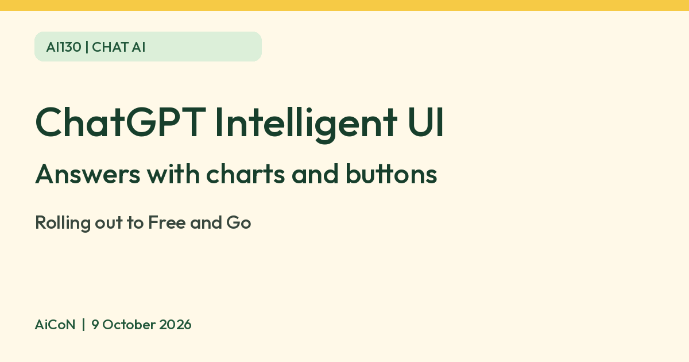

ChatGPT Intelligent UI: answers with charts, buttons and forms
OpenAI says ChatGPT with GPT-6 can now answer with interactive elements such as charts, tappable buttons and forms, not only text. It is called Intelligent UI and sits in the Chat tab.

What it is
OpenAI's announcement says GPT-6 in ChatGPT introduces Intelligent UI. Instead of only text, ChatGPT can answer with graphics, tappable buttons, forms, charts and interactive experiences you use right in the conversation.
What OpenAI says it is for
- Making everyday answers more visual.
- Making complex topics easier to learn.
- Quickly creating a small tool for a task in the moment.
Who gets it
| Plus, Pro, Business, Enterprise | Rollout began 7 October 2026 in the Chat tab. Enterprise depends on admin settings. |
|---|---|
| Free and Go | OpenAI says the rollout expands to Free and Go from 8 October 2026, using GPT-6 Luna. |
How to try it
- Update the ChatGPT app and open the Chat tab.
- Ask something that suits visuals, such as comparing two options or explaining a concept.
- OpenAI's help page says if GPT-6 is missing from your model menu, it may not be available on your account yet.
Limits to know
- It is a gradual rollout, so you may not see it today.
- It applies to Chat only. OpenAI says Work and Codex models are not changed by this release.
- Charts and forms are generated by AI. Check numbers before relying on them, especially for money or health.
- OpenAI Help says Intelligent UI works on the web and supported updated apps at Instant through Extra High, not at Pro effort. Older ChatGPT desktop apps for macOS and Windows do not support it; use the web version instead.
- Intelligent UI has no separate quota. Existing model, tool and plan limits still apply. We did not test it ourselves.
AiCoN checkRead OpenAI's announcement and the ChatGPT help page on 9 October 2026. The announcement names GPT-6 Luna for Free and Go, while the help page still names GPT-5.6 Luna for those plans. These sources disagree on model names; do not assume your account has GPT-6 Luna yet.
Frequently asked questions
Is it free?
OpenAI says Free and Go tiers get the rollout from 8 October. Limits are not detailed in the announcement.
Why do I not see it?
The rollout is gradual. Update the app and check the model menu.
Sources: OpenAI, GPT-6 and Intelligent UI for everyone, OpenAI Help, GPT-6 and other models in ChatGPT. Checked 9 October 2026.